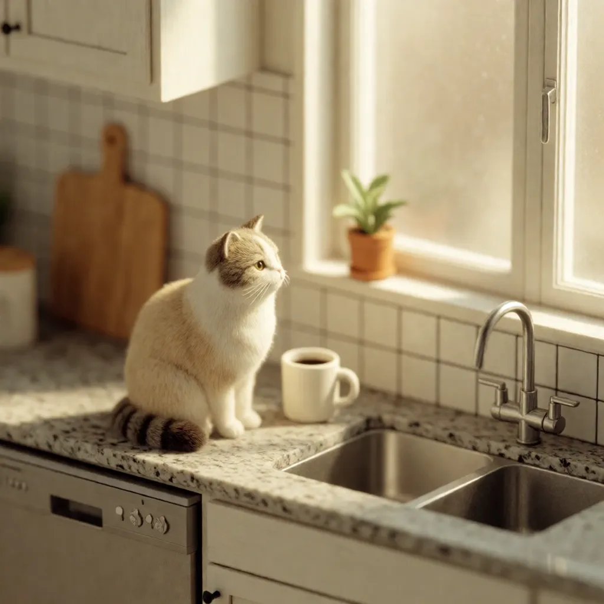
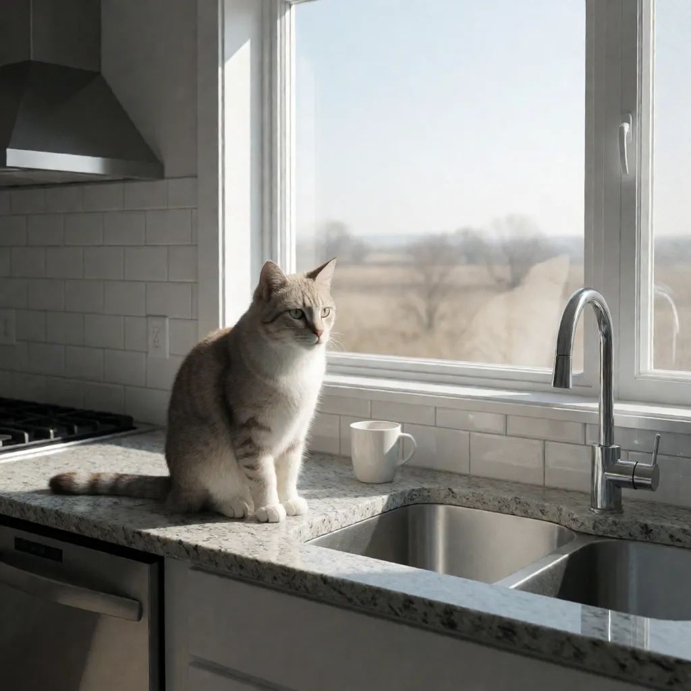
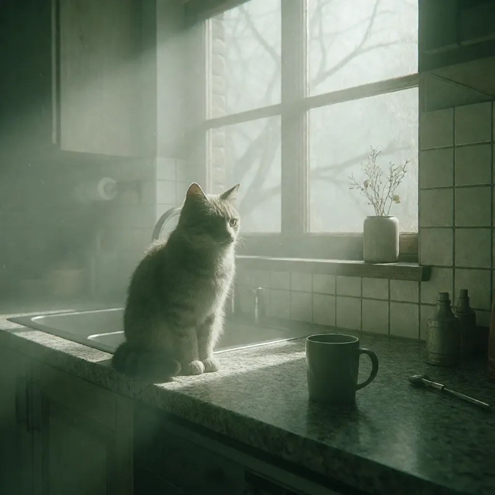
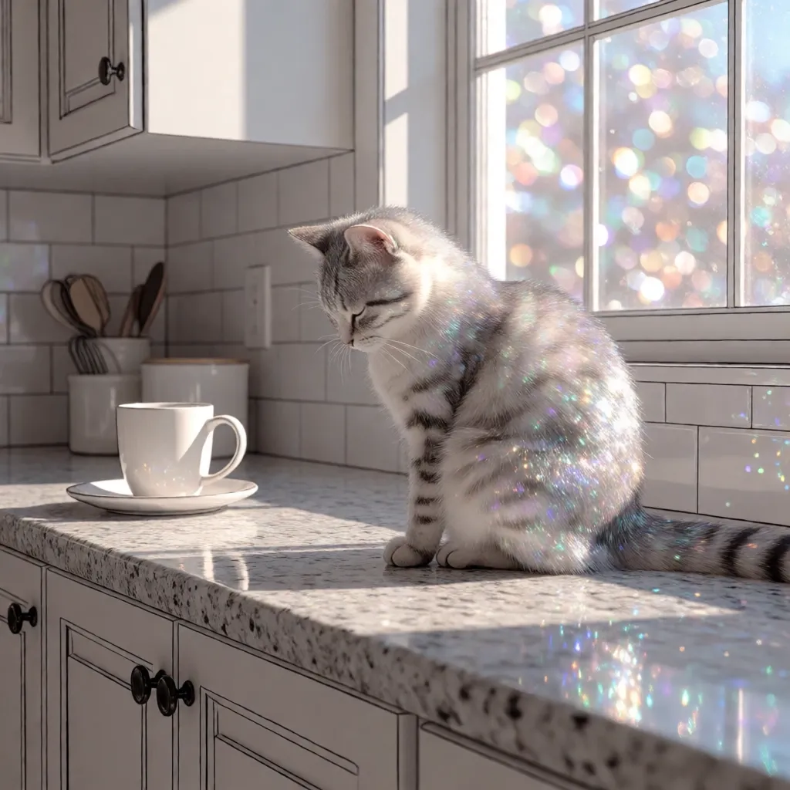
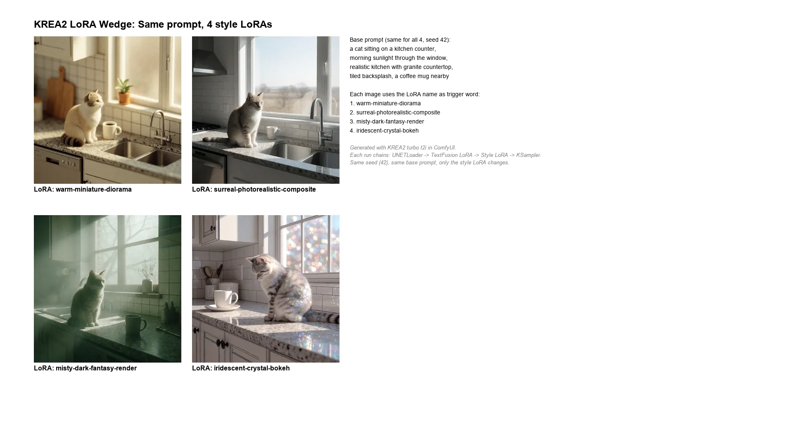

Prompts
Jon → Hermes (spoken input)
Hermes → ComfyUI (KREA2 turbo t2i — 4 runs)
Results — 4 LoRA Styles




tldraw Canvas — GUI Export

What Happened
Setup: Four KREA2 style LoRAs, each 224 MB, installed in models/loras/krea2/. The workflow chained two LoRA loaders: the existing TextFusion Refusal Reduction LoRA (for prompt compliance) followed by the style LoRA, both feeding into the KSampler.
The base prompt was identical across all four runs: "a cat sitting on a kitchen counter, morning sunlight through the window, realistic kitchen with granite countertop, tiled backsplash, a coffee mug nearby." Same seed (42). The only variables were the LoRA file and the trigger word prepended to the prompt.
Jon caught an inaccuracy: The canvas description said "only the LoRA changes" — but that's not quite right. Both the LoRA file and the trigger word in the prompt change together. The trigger word activates the LoRA's learned style; without it, the LoRA weights apply but the style doesn't fully activate. So saying "only the LoRA changes" is misleading — the prompt also changes by one word.
Generation: All 4 images generated in 33 seconds total (~8s each, models warm). Vision analysis confirmed distinct styles:
warm-miniature-diorama: Classic tilt-shift / miniature faking effect — extremely shallow depth of field, warm golden lighting, the kitchen looks like a tiny toy model.
misty-dark-fantasy-render: Moody, foggy, volumetric god rays streaming through the window, desaturated palette, dark fantasy atmosphere — like a concept art still from an indie game.
surreal-photorealistic-composite and iridescent-crystal-bokeh each applied their own distinct visual treatment to the same scene.
Labels simplified per Jon's request: Initially each image had both the LoRA name and the trigger word. Jon said to remove the trigger — just show the LoRA name. The labels were updated in-place via the tldraw API.